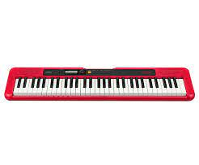
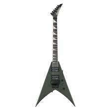
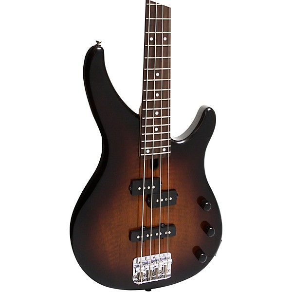
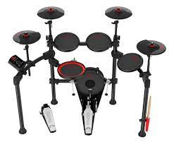

Teclado Casio Casiotone CT-S200
Teclado portátil com vários timbres, tocável para iniciantes e uso em shows pequenos.
R$ 750,40

Violão Folk Michael
Violão folk acústico, corpo grande, bom para acompanhamentos e solo simples.
R$ 1.222,20

Violão Acústico Nylon GNA-111 Harmonics
Modelo clássico com cordas de nylon, ideal para estilos como MPB, bossa nova e estudo.
R$ 248,56

Jackson JS32 King V Electric Guitar
Guitarra com corpo estilo “V”, típica para rock/metal, braço rápido, captadores potentes, ideal para solos e riffs agressivos.
R$ 1.869,00

Yamaha 4-String Electric Bass
Baixo de 4 cordas, marca confiável, bom equilíbrio entre som profundo e clareza — ótimo pra bandas variadas, desde pop até rock e funk.
R$ 1.489,00

MXT MD200C 7-Pad Electronic Drum Kit
Kit eletrônico com 7 pads, 165 timbres, interface MIDI — bastante versátil para estudo, ensaios ou gravações caseiras.
R$ 1.668,26